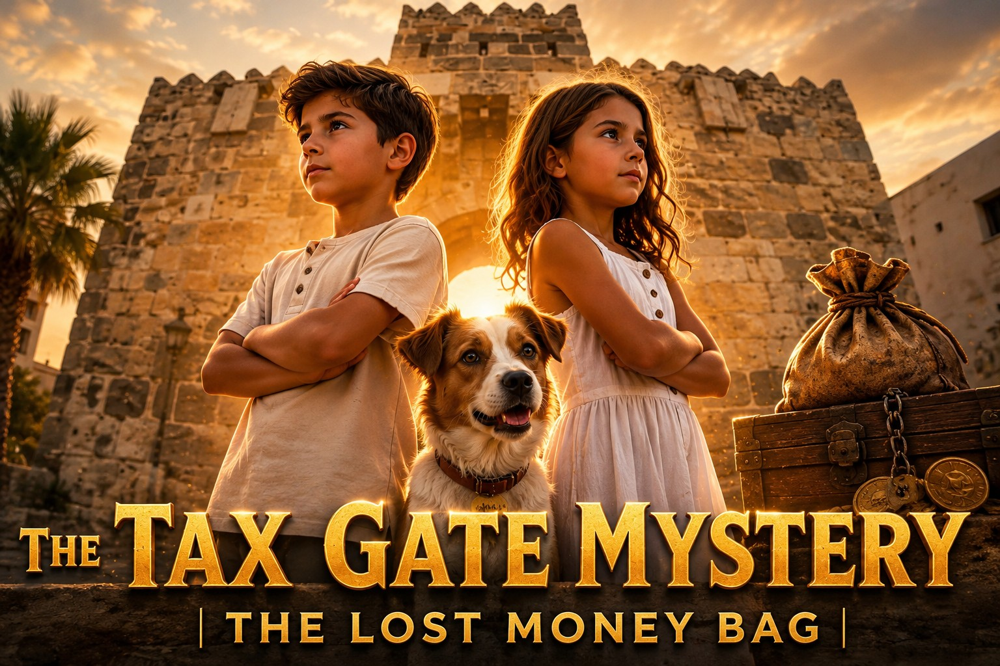

Taal
De oude site had een Nederlandse versie. Die films zijn hier nog niet geplaatst, zodat er geen dode link ontstaat.

Hello Kos heeft een kinderserie over Nikos en Eleni. De afleveringen staan nog niet op deze site.
De oude site had een Nederlandse versie. Die films zijn hier nog niet geplaatst, zodat er geen dode link ontstaat.